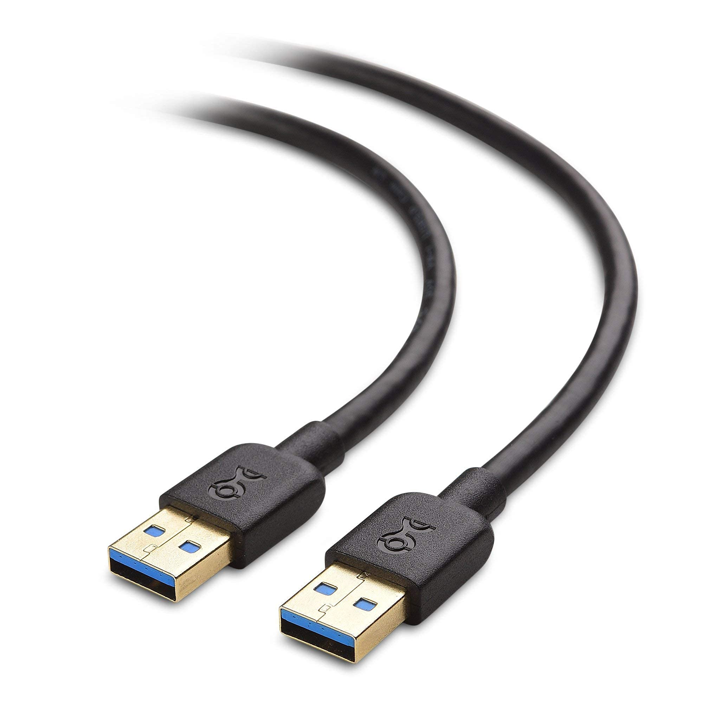
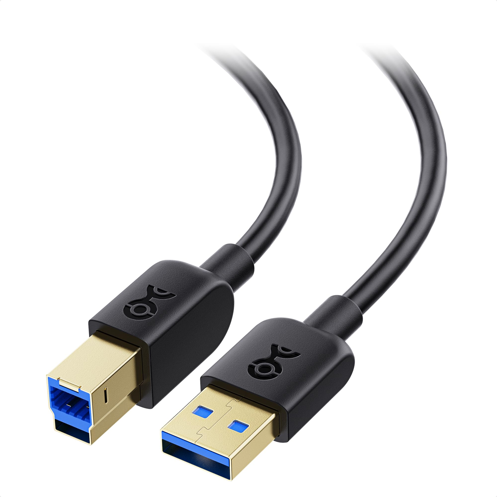
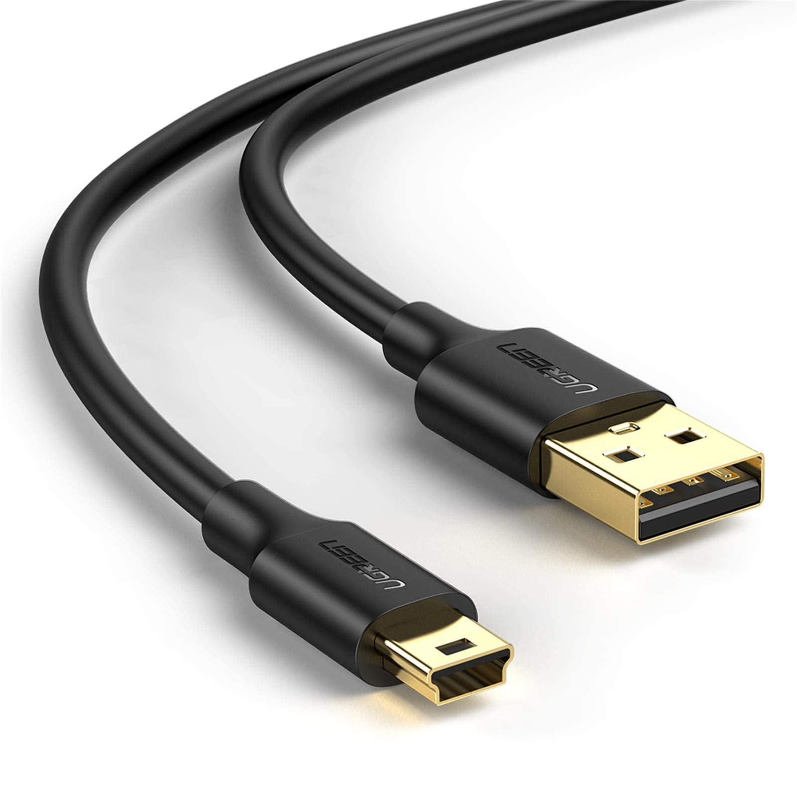
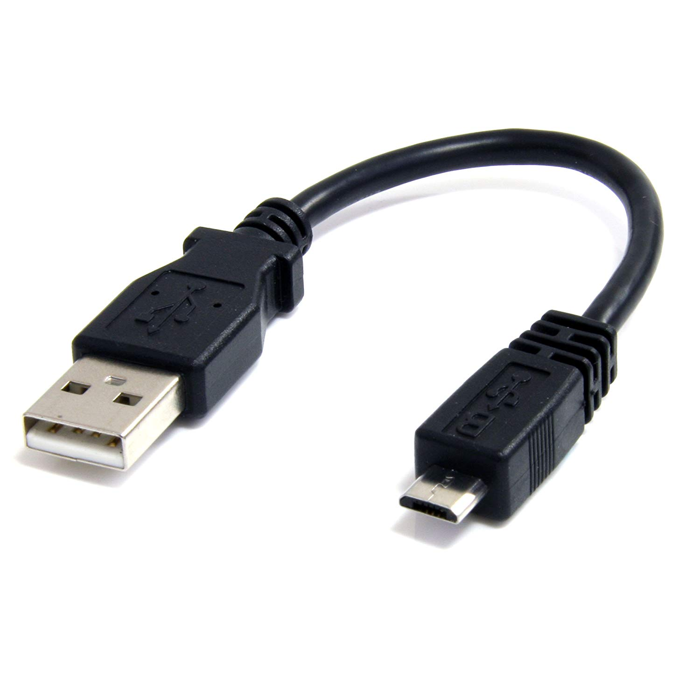
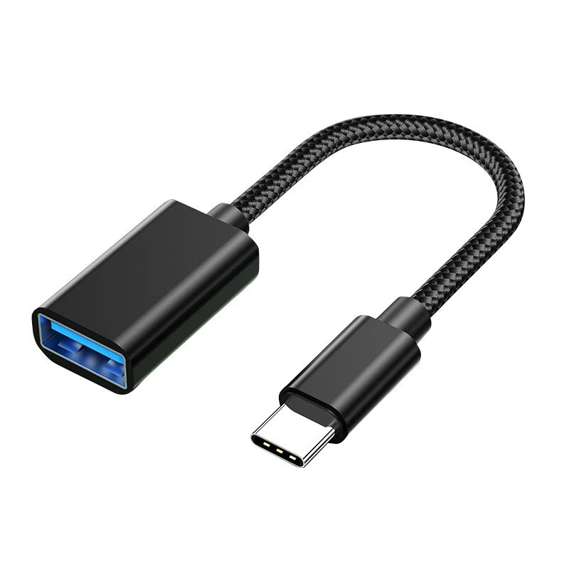

🔌 USB Connector Types

1. USB Type-A
- Most common rectangular port.
- Found on computers, TVs, game consoles.
- Only inserts one way (non-reversible).

2. USB Type-B
- Square-ish with a slanted top.
- Common on printers and some external hard drives.

3. Mini-USB (Type-B)
- Smaller version of USB-B.
- Used in older cameras and MP3 players.

4. Micro-USB (Type-B)
- Smaller and flatter than Mini-USB.
- Common on older Android phones and accessories.
- Not reversible.

5. USB Type-C
- Modern standard, reversible.
- Used in new phones, laptops, tablets.
- Supports power, data, video.